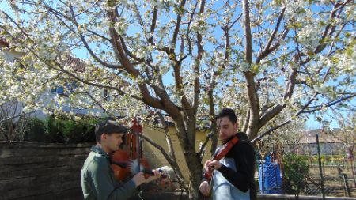
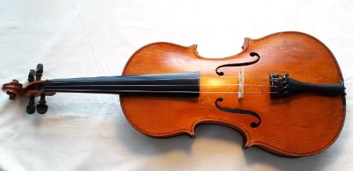

Két éve kezdtem el hegedülni, először magamtól, majd Koncz Gergő prímástól.
Úgy gondolom, hogy vagyok már azon a szinten, hogy kezdő hegedűsöket tanítsak. Ezen az oldalon találsz egy oktató sorozatot, illetve egy videót, melyben a felvett sorozat dallamait egyben is eljátszom, némi kiegészítéssel.
Kalotaszegi hajnali, csárdás

A videóban a tanult kalotaszegi dallamokat hallhatod. Kísér Kovács Benedek brácsán.
(A videó a képre kattintva elindul.)
Kalotaszegi népzene oktató sorozat

Ebben az oktató sorozatban kalotaszegi dallamokat tanulhattok. Ezt kezdő hegedűsöknek ajánlom!
(A sorozat a képre kattintva elindul.)